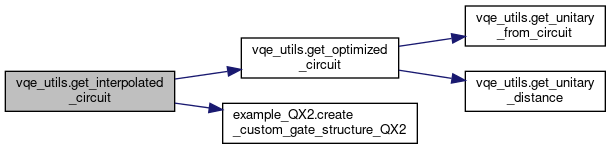
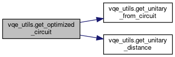
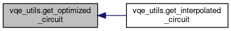

Functions | |
| def | get_interpolated_circuit (alpha) |
| ??????????? More... | |
| def | get_optimized_circuit (alpha, optimized_parameters_in=None) |
| ??????????? More... | |
| def | get_unitary_distance (Umtx1, Umtx2) |
| Calcuates the distance between two unitaries according to Eq. More... | |
| def | get_unitary_from_circuit (qc) |
| Retrieve a unitary matrix from a QISKIT quantum circuit. More... | |
| def | load_preconstructed_data (filename1, filename2) |
| Call load precosntructed data for inerpolated optimization. More... | |
Variables | |
| alpha_vec = None | |
| backend = Aer.get_backend('unitary_simulator') | |
| Qiskit backend for simulator. More... | |
| optimized_parameters_mtx = None | |
Function Documentation
◆ get_interpolated_circuit()
| def vqe_utils.get_interpolated_circuit | ( | alpha | ) |
???????????
- Returns
- ???????????
Definition at line 136 of file vqe_utils.py.
Here is the call graph for this function:

◆ get_optimized_circuit()
| def vqe_utils.get_optimized_circuit | ( | alpha, | |
optimized_parameters_in = None |
|||
| ) |
???????????
- Returns
- ???????????
Definition at line 75 of file vqe_utils.py.
Here is the call graph for this function:

Here is the caller graph for this function:

◆ get_unitary_distance()
| def vqe_utils.get_unitary_distance | ( | Umtx1, | |
| Umtx2 | |||
| ) |
Calcuates the distance between two unitaries according to Eq.
(3) of Ref. ....
- Parameters
-
Umtx1 The first unitary Umtx2 The second unitary
- Returns
- Returns with the calculated distance
Definition at line 61 of file vqe_utils.py.
Here is the caller graph for this function:

◆ get_unitary_from_circuit()
| def vqe_utils.get_unitary_from_circuit | ( | qc | ) |
Retrieve a unitary matrix from a QISKIT quantum circuit.
- Parameters
-
qc A QISKIT circuit
- Returns
- Numpy array containing the unitary
Definition at line 42 of file vqe_utils.py.
Here is the caller graph for this function:

◆ load_preconstructed_data()
| def vqe_utils.load_preconstructed_data | ( | filename1, | |
| filename2 | |||
| ) |
Call load precosntructed data for inerpolated optimization.
- Parameters
-
filename1 The filename containing the preconstructed optimizated parameters filename2 The filename containing the parameter values
Definition at line 28 of file vqe_utils.py.
Variable Documentation
◆ alpha_vec
| vqe_utils.alpha_vec = None |
Definition at line 21 of file vqe_utils.py.
◆ backend
| vqe_utils.backend = Aer.get_backend('unitary_simulator') |
Qiskit backend for simulator.
Definition at line 16 of file vqe_utils.py.
◆ optimized_parameters_mtx
| vqe_utils.optimized_parameters_mtx = None |
Definition at line 20 of file vqe_utils.py.